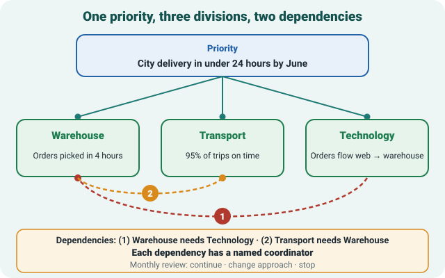

K5 · Planning and keeping work commitments › Level 5 Leading
Turn strategy into work for each division
This lesson completes Sheet 3: Strategy-to-work table. Print template. In the N5 course, you wrote a one-page team goal. This lesson does the same for several divisions at once.
1. Objectives
- Turn a strategic priority into 3–5 measurable results, shared among divisions, with dependencies noted.
- Set up a monthly review with continue, change or stop criteria written in advance.
2. Retrieval warm-up
- Why estimate from similar cases before looking at your own plan?
- In a pre-mortem, why does the most senior person speak last?
Answers
- Your own plan is usually optimistic. Real data is a more objective starting point.
- So others do not just follow, and dare to raise other reasons.
Review: Strategic decisions.
3. Explanation
Many good strategies still fail in execution. Common reasons: too many priorities, each division reading them differently, and nobody looking after the points where two divisions meet.
Step 1. Few priorities. Choose at most 3 priorities for the year. Write each as a measurable result with a date. "Improve customer experience" is not a result. "Cut city delivery time to under 24 hours by June" is a result.
Step 2. Share them among divisions. Each division writes its contribution: what result, measured how. Each division also notes: which division we need, what we need, by when.

Dependencies are where things break. Each dependency needs a named coordinator. Otherwise each division waits for the other.
Step 3. A review rhythm. One session a month, around 60–90 minutes.
- Figures are sent 2 days in advance. Nobody reads reports out in the meeting.
- Discuss only indicators that are off plan and dependencies that are stuck.
- Each priority gets one of three decisions: continue, change approach, or stop.
Criteria written in advance. When you set a priority, write: "If the indicator has not reached this level by March, we change approach." Write it while you are still objective, before much effort has gone in.
Sheet 3. Strategy-to-work table
- PriorityA measurable result with a date.
- Each division's partResult, indicator, owner.
- DependenciesWho needs whom, for what, coordinator.
- CriteriaWhat level means continue, change, stop.
Stopping a priority is not failure. Continuing something clearly wrong is the real waste.
4. Workplace example
Hypothetical scenario. An electrical equipment distributor has 5 divisions. This year the leadership team has 7 "priorities".
The CEO, Martin, and the leadership team cut them to 2. Priority 1: a 60% repeat order rate by December.
Each division writes its part. Sales: call customers back after 30 days. Technical service: resolve warranty claims within 3 days. Warehouse: keep the 50 best-selling items in stock.
Dependency: technical service needs spare parts in the warehouse. The warehouse head is named coordinator.
Criterion written in advance: if the repeat rate is below 45% in April, change approach.
In April, the rate is 41%. The review does not argue for long. The team changes approach: add a regular maintenance package for existing customers.
Why this works: few priorities, and the dependency has an owner. The criterion was ready, so the decision is quick, without blame.
5. Practice
Hypothetical scenario. You are COO of a chain of dental clinics. The priority for the year: cut appointment cancellations from 20% to 10% by September.
Fill in Sheet 3 for 3 divisions: customer care, clinical, technology. Note at least one dependency and one change-approach criterion.
Hint 1
Why do patients cancel? They forget, waits are long, prices are unclear. Which division owns each reason?
Hint 2
A change-approach criterion needs a mid-year date and a specific figure.
Model answer
- Customer care: a reminder message 24 hours before every appointment. Measured by the share of reminders sent.
- Clinical: clear quotes before treatment. Waiting time under 15 minutes.
- Technology: the booking system sends reminders automatically and lets patients change times.
- Dependency: customer care needs technology to finish the reminder feature by March. Coordinator: head of technology.
- Criterion: if cancellations are still above 16% in May, change approach.
(The figures are hypothetical.)
6. Self-check
Choose an answer. Every option has an explanation.
Question 1. Which is a measurable result for a strategic priority?
-
Not quite. This only states a direction. Nobody knows when it is achieved.
-
Correct. Correct. It has an indicator, a level and a date.
-
Not quite. There is no indicator, no date and no clear owner.
Question 2. Sales is waiting for technology to build a new feature. Each says it is waiting for the other. What is missing?
-
Not quite. That may be true, but there is no evidence. "Waiting for each other" points to another problem.
-
Correct. Correct. If nobody owns a dependency, each division waits for the other.
-
Not quite. A big meeting does not settle who is responsible for coordinating.
Question 3. The monthly review usually runs 3 hours because each division reads its report. How should it change?
-
Correct. Correct. The meeting is for deciding, not for reading.
-
Not quite. Without a shared rhythm, nobody looks at the dependencies between divisions.
-
Not quite. Meeting time is still spent reading. Decision time is still squeezed.
Question 4. At the checkpoint, the indicator is below the criterion written in advance. The division asks for 3 more months. What should you do?
-
Not quite. Effort already spent cannot be recovered. Decide on what the data says about the future.
-
Correct. Correct. Criteria set in advance keep the decision objective. An extension needs a new reason.
-
Not quite. A missed indicator is not necessarily one person's fault. First, see whether the approach needs changing.
7. Reflection
- How many "priorities" does your organisation have? If you kept only 3, which would you drop?
- Which dependency between divisions has no coordinator right now?
8. Real-world application
In the next 7 days, choose one of your organisation's priorities. Fill in Sheet 3 with the heads of the divisions involved. Put the change-approach criterion on next month's review agenda.
Level of evidence. The structure of this lesson draws on the capability descriptions "Delivering at Pace" (UK Success Profiles) and "Achieving Results" (US OPM). The three steps and Sheet 3 are this site's proposed method and have not been tested by dedicated research.
9. Metadata
| skill | K5 · Planning and keeping work commitments |
|---|---|
| level | Level 5 · Leading |
| group | N6 |
| framework_map | UK Civil Service Success Profiles: Delivering at Pace; US OPM ECQs (2025): Achieving Results; CSfW: 3a Plan and organise; SkillsFuture CCS: Self Management; WEF: Leadership and social influence (reference only) |
| original | Vietnamese version |
| updated | 2026-11-14 |
Finish the lesson
Mark it as done and the site suggests reviews after 1, 3 and 7 days. The data stays on your device only.
Suggested reviews: